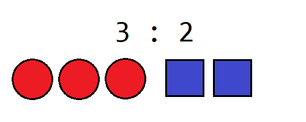
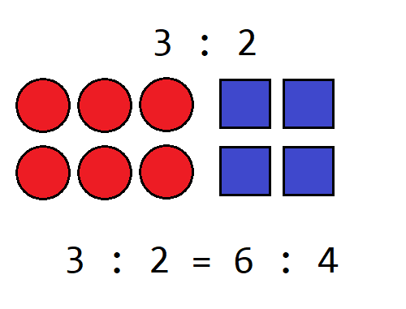
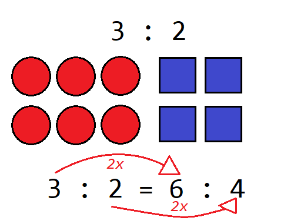
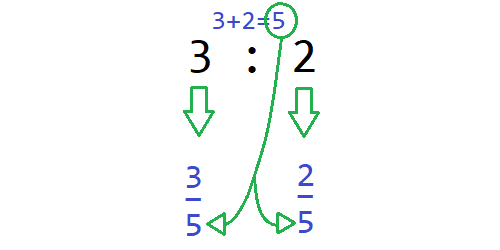
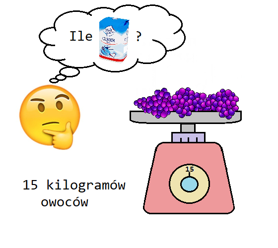
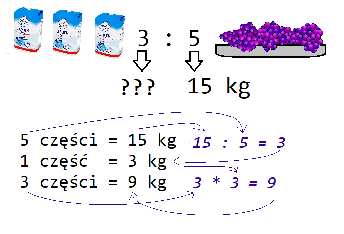
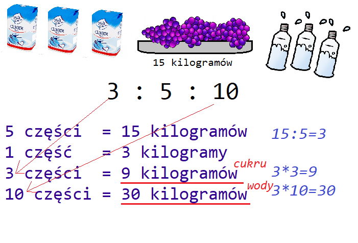
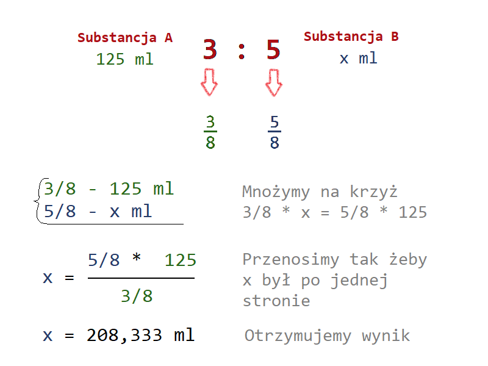

Stosunek to ilorazowe odniesienie wartości względem siebie. Ale może jaśniej?
Stosunek mówi jak bardzo jedna rzecz odpowiada kolejnej.
Pomiędzy liczbami występuje znak dwukropka ":". Możemy też używać słowa "do". Na przykład 3:1 to 3 do 1, oznacza trzy do jednego.
Możemy też podwajać, potrajać i tak dalej nasze kółka i kwadraty, a wciąż ich stosunek się nie zmieni.
I tu możemy przejść do ułamków.
Lub spróbować na przykładzie. W życiu codzienny możemy spotkać sytuacje, gdzie substancje będą połączone proporcją, a konkretnie stosunkiem względem siebie. Na przykład robiąc kompot (lub sok) napotykamy stosunek owoców do cukru. Cukru mamy dużo, bo kupiliśmy na zapas, ale owoców mamy określoną ilość (bo akurat tyle zebraliśmy).
Nasz stosunek to 3:5 ( trzy do pięciu) cukru do owoców. Jednostką może być litr, może być kilogram lub całkiem coś innego. Ważne jest to, że obie substancje będą obliczane w takiej samej jednostce.
3 : 5 to trzy części pierwszej i pięć części drugiej rzeczy
I tak już wiemy, że cukru potrzebujemy 9 kilogramów.
A co jeżeli będziemy mieli więcej substancji? Np. oprócz stosunku cukru i owoców, będziemy mieli informację ile potrzeba nam wody np. 3:5:10, tj. trzy cześci cukru, pięć części owoców i 10 częśći wody? Oczywiście, liczyć możemy tak samo.
Mam nadzieję, że już jest wszystko zrozumiałe. Na koniec jeszcze sposób z proporcjami i ułamki.
Trzy części i pięć części oznacza, że wszystkich mamy osiem części, więc logicznym jest, że w mianowniku będzie 8. Proporcje układamy tak, że w jednej lini jest jedna substancja. Pionowo proporcje pod sobą, ilości pod ilościami. Mnożymy na krzyż. Wyliczamy x.